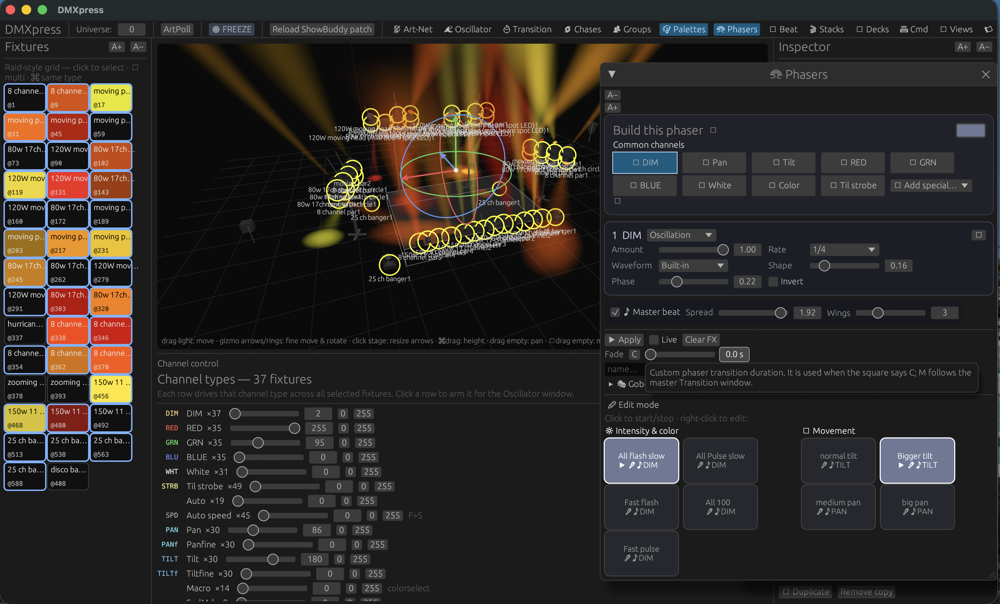
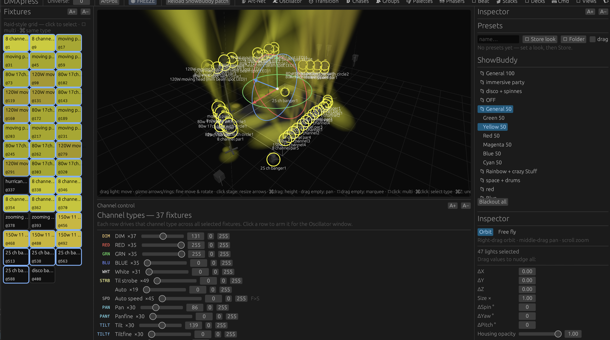

Native · Built in Rust · Open Source
DMXexpress is a native DMX fixture visualizer and live lighting controller. Patch fixtures, build looks, run effects, play back cues, and watch it all happen in a real-time 3D stage — no professional console required.

No rig? No problem.
The built-in 3D visualizer renders your entire rig — fixture positions, colors, movement, and volumetric beams — live as you program. That means you can learn the console, build full shows, and rehearse busking sessions from your desk.
When you're ready for the real thing, the exact same show outputs over Art-Net to physical nodes and fixtures. What you rehearsed is what you run.

A full rig in an “All 50” starting position — shaped with pan and tilt while watching the 3D result.
Start in seconds
DMXexpress ships with ready-made show configurations and stage setups, so you can open the app and start programming immediately — no patching homework first.
Complete show configurations live under configs/ — load one and everything comes with it: patch, groups, palettes, phasers, and cue stacks.
Stage arrangements under setups/ give you fixture layouts like full rigs and back towers you can drop into any show.
All show data is plain JSON in the working directory. Read it, tweak it, version-control it — nothing is locked in a binary format.
Because everything — fixtures, stages, palettes, sequences — is simple, readable JSON, it's remarkably easy to prompt an AI assistant to add new features, build a new stage layout, or generate fixture profiles for you. Describe the rig you want; get a stage you can rehearse on tonight.
The full console, explained
Each part of DMXexpress maps to a familiar lighting-console concept — here's what each one does and why you'd use it.
Your scratchpad. Select fixtures and set dimmer, color, position, and beam values directly. Changes are temporary until you store them somewhere reusable.
Save any fixture selection — “all spots”, “back towers”, “front wash” — and recall it with one tap instead of re-selecting every time.
Reusable building blocks for color, position, dimmer, beam, focus, and control values. Update the palette once and every look that uses it follows.
Living effects: movement sweeps, intensity pulses, chases, and color waves. Edit the phaser beside the live 3D result and tune it in real time.
Snapshots of the programmer you can bring back instantly — perfect for starting positions and go-to looks you reach for constantly.
Record looks as cues with tracking and fade timing, then step through your show one “go” at a time — theatre-style playback.
Hands-on faders for live control, with a Grand Master over everything. Assign stacks and effects, then busk the show in the moment.
Place fixtures, select them on stage, and see volumetric beams respond live. It's both your pre-viz tool and your programming feedback loop.
Sends two contiguous DMX universes at ~40 fps with automatic node discovery. Optional ShowBuddy fixture-patch import on macOS.
How it fits together
Add fixtures to the patch, or import a supported ShowBuddy patch on macOS.
Place fixtures in the 3D stage view — or start from an included sample setup.
Pick fixtures directly on stage and save the selections you use most as Groups.
Build looks in the Programmer while watching the visualizer respond live.
Keep reusable values as Palettes, Presets, and Phasers.
Capture cues into Stacks with tracking and fade timing.
Assign playback to the Decks and run the show with faders and Grand Master.
Select an Art-Net interface and send DMX to a node or visualizer.
Get started
You'll need a current Rust toolchain with Cargo, a GPU supported by wgpu, and macOS or a compatible Linux desktop. An Art-Net node is only needed for live output — the visualizer works with nothing else on the network.
# run in development
cargo run
# optimized build
cargo build --release
./target/release/dmxpress
# run the tests
cargo testNetwork safety: DMXexpress can transmit live lighting data over Art-Net. Confirm the selected interface, universe, patch, and Grand Master before connecting to a live rig.
Open source
DMXexpress is under active development and licensed under the Mozilla Public License 2.0 — use it, modify it, and build on it. Issues, testing feedback, fixture profiles, and code contributions are all welcome.
The long-term roadmap includes a plugin API, more output protocols, larger universe counts, and packaged releases.